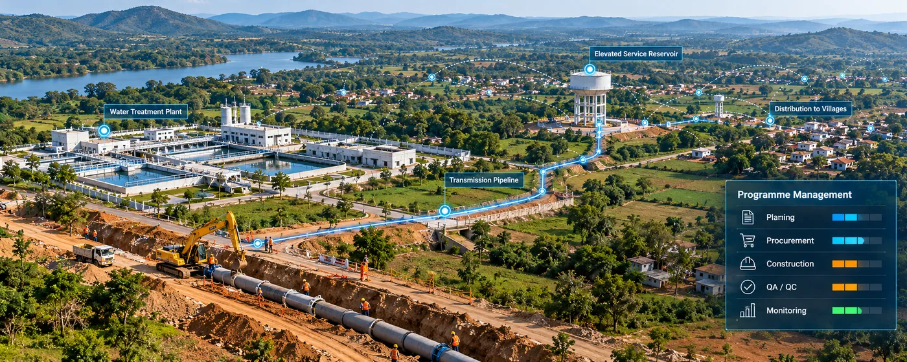

The Assignment
The State Water & Sanitation Mission, Uttar Pradesh required Project Management Consultancy support for the implementation of large-scale rural piped water supply infrastructure across Sonbhadra district.
The programme comprised 6 water-supply packages covering 2,400 villages and a design population of approximately 4 million, requiring coordinated planning, procurement, construction supervision and quality assurance across a geographically extensive programme.
Our Approach
CS TECH Ai provided end-to-end Project Management Consultancy services to support planning and implementation of the rural water-supply programme.
The engagement included:
- Planning and design support for water-supply schemes
- Preparation of bid and tender documentation
- Support for floating of bids and selection of project-executing agencies
- Construction supervision across multiple water-supply packages
- Quality Assurance and Quality Control (QA/QC)
- Project monitoring and implementation oversight
- Contractor coordination
- Monitoring of water-supply infrastructure delivery
- Support for 14 Water Treatment Plants
- Oversight of 150 ESRs/GSRs
- Support for approximately 2,800 km of pipeline network
The programme represented a capital investment of approximately ₹3,000 crore.
Impact
Supported implementation of a major rural water-supply programme covering 2,400 villages.
Supported infrastructure planned for a design population of approximately 4 million people.
Provided integrated PMC support across planning, procurement, construction supervision and quality management.
Supported coordinated delivery across 6 separate water-supply packages.
Provided project oversight for 14 WTPs, 150 ESRs/GSRs and approximately 2,800 km of pipeline network.
Helped establish structured monitoring and quality-control processes for implementation of the ₹3,000 crore programme.